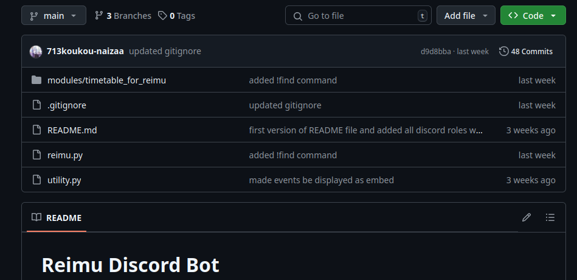
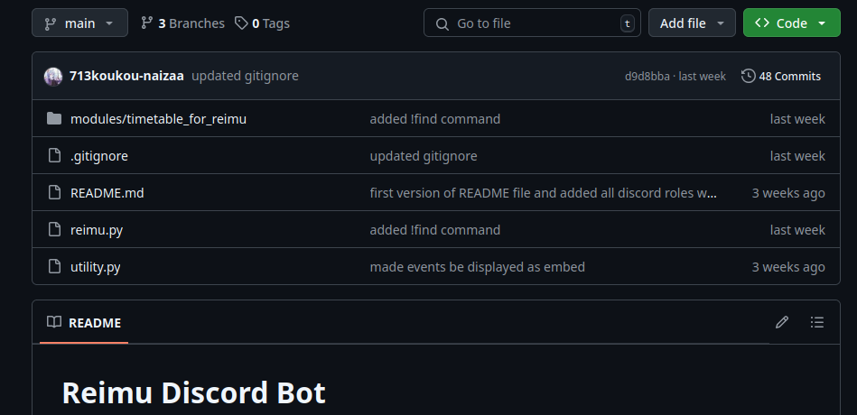

Reimu is a python discord bot retrieving data from an ics file and offering many discord commands to fetch data. Creating this discord bot allowed me to learn more about ics files and their structure to process their data, practice a way of versionning code with one branch per version and adapt a python program into a module like one would to create an API.
I used git in this project to create different versions of the bot by separating them into different branches. GitHub allowed me to work on the project whenever I wanted on whatever computer I was.
 

I used python as the main language to create this bot. I had to fetch data with the requests library of python to get the ics file and translate it into a Calendar object to process the data later.


Discord.py is the library offered by discord to code a bot in python. While most of the syntax is specific to discord, it still demands to understand the principles of asyynchronous programming, event-driven programmation and OOP.